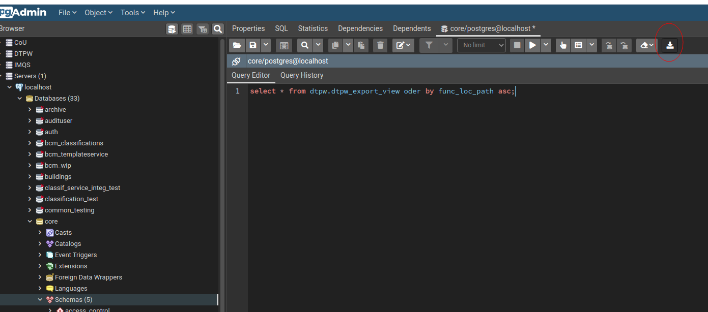

Welcome to the download page

Here you can download the necessary files to import data with configurations pre-configured to connect to this machine.
You need to download all 4 files for your OS and then run either import.bat or import.sh.
Commandline
import.bat [config_file] [command] [data file] ( [flags] or [lookup type])
where command is one of:
- assets
- asset_to_landparcel
- lookups
- delete
Flags
- FORCE_INSERT Performs an INSERT rather than an UPDATE when an Asset UUID is found
- FORCE_CONTINUE Writes to the exception file but does not terminate execution
- FORCE_UPSERT If set the importer will check if the asset exists and then perform an UPDATE else it will INSERT
- HARD_DELETE Erase record instead of marking inactive
Flags are comma (`,`) separated and enclosed in double quotes (`"`)
E.g. import "import_config.json" assets 43703_43734_5761_UPDATE_FL.CSV "FORCE_INSERT,FORCE_CONTINUE"
Windows
Example ./import.bat import_config.json assets xxx.csv
Linux
Example ./install.sh import_config.json assets xxx.csv
Exporting
Using basic UI
This UI is nasty and not intended to be used or even seen by customers.
Open UI
Using pgAdmin
To export the data open PgAdmin and use
select * from dtpw.dtpw_export_view oder by func_loc_path asc;
and the circled button to download a csv file. 
Note that it does not include lookup tables or the landparcel / asset linking information. All other data is included though.